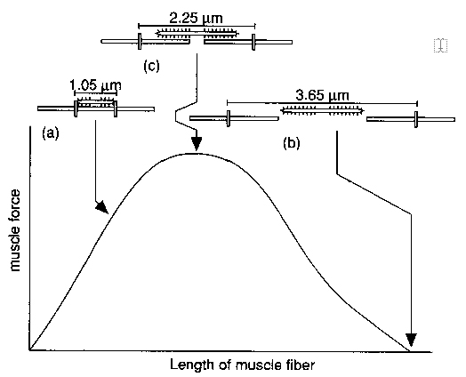
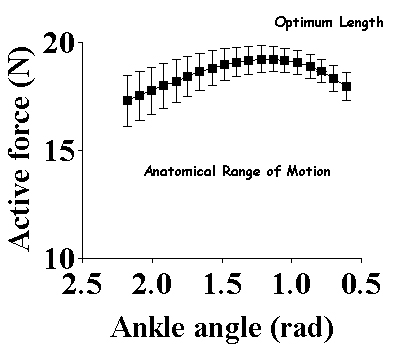
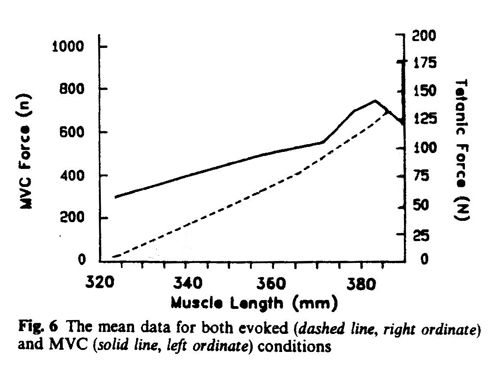
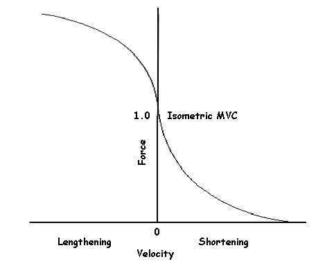
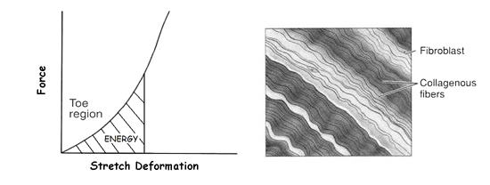
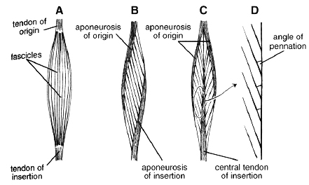
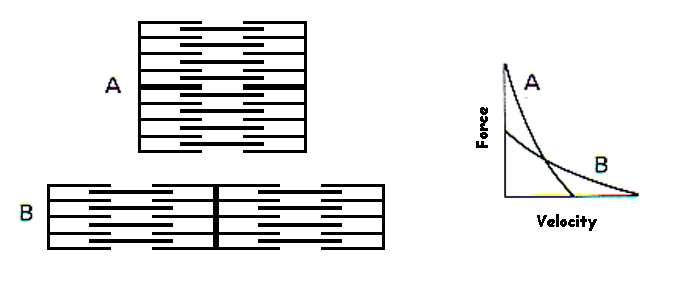
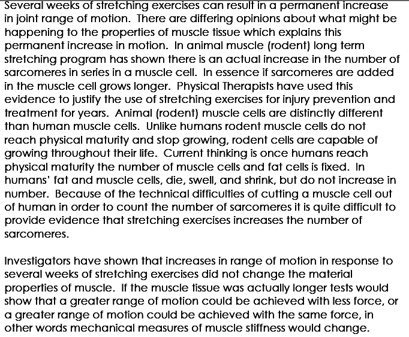
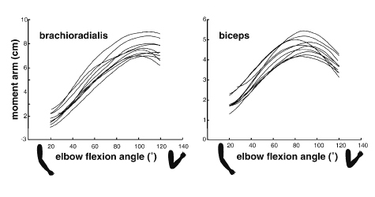
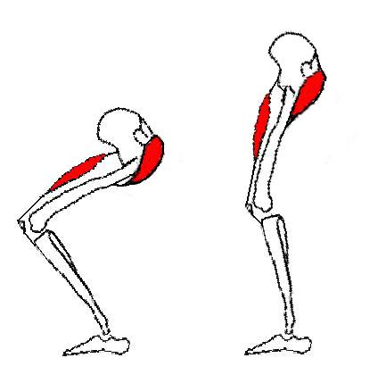

Muscle Mechanics

The single most important tissue for human movement is skeletal muscle. It is the motor that acts in response to the command of the central nervous system (CNS) and produces the forces that allow or prevent motion.
Brief Review of Muscle Anatomy:
The muscle has many fibers within a fascicle and many fascicles within the muscle. Connective tissues (Epimysium, Perimysium, and Endomysium) form the harness that holds the fibers, fascicles and muscle together.

The muscle fiber is also called the muscle cell and when it is viewed with a microscope, it has a striated pattern. The pattern results because each myofibril contains sarcomeres linked together in series with dark Z discs separating each sarcomere. Within the sarcomere you can see the protien filaments (actin and Myosin) which slide past each other and shorten the muscle when it contracts (becomes active). For more information on muscle activation, please see the electromyography lecture. With an electron microscope, you can see crossbridges on the muosin filaments that bind to actin and produce force. The sarcomere is only about 2 micometers in length.

Muscle is a unique motor with properties that need to be understood in order to be an effective biomechanist. The three component model is a very helpful way to look at those properties.
Three Component Model of Muscle:
The three components required to explain the properties of muscular contraction include the contractile component as well as the series and parallel elastic components.
Contractile Component (CC):
The contractile component is the component that actively generates force in the muscle. The fundamental mechanical event is the muscle twitch which is an "all-or-none" event in which all of the muscle fibers within the motor unit are activated simultaneously. The central nervous system activates the muscle by sending action potentials which release Calcium ions from the sarcoplasmic reticulum which allows actin and myosin filaments to interact via crossbridges. the muscle does not generate force instantaneously. The response of the muscle is described by the force-time relation is often called the active "state of the muscle".
(1) Force-Time Relation:
Electro-mechanical delay (EMD) - the time from the stimulus to the beginning of force development. It takes about 10 ms for calcium to leave the sarcoplasmic reticulum and allow binding between actin and myosin filaments
Contraction Time- the time it takes the twitch to reach maximum force. This is about 30-60 ms for fast twitch fibers and 80 to 120 ms for slow twitch fibers
Half Relaxation Time - the time it takes for calcium to return to the sarcoplasmic reticulum is exponential which makes it difficult to quantify the total relaxation time. Therefore, researchers have used the time it takes the twitch to decline to one half of the maximum force in order to characterize the relaxation time. The half relaxation time is approximately equal to the contraction time.
The CNS activates muscle with series of stimuli which summate to produce varying amounts of force. It is important to realize that muscle force is not attained immediately or stopped immediately. The calcium dynamics and fiber type cause the muscle to generate force more slowly than the fast stimuli sent from the CNS.
(2) Force-Length Relation:

Each muscle fiber consists of many sarcomeres linked in series that can generate force based on the overlap of the protein filaments. The diagram to the right shows this relationship. It is interesting that muscles in many different animals of vastly different sizes have the same sarcomere size. That is, a sarcomere length of 2.25 microns allows the greatest force to be generated and longer muscles simply have more sarcomeres in series.
Optimum length has been called rest length in the past but one cannot assume that the length of an inactive muscle corresponds with a sarcomere length of 2.25 microns. Indeed, sarcomeres in the middle of the fiber many be at a different length than sarcomeres at the ends of the fiber and different fibers may have slightly different sarcomere lengths. This is known as "sarcomere dispersion" and results in a force-length relation for the whole muscle that has an inverted "U" shape which is different for various muscles and individuals.

Another important consideration of the force-length relation is to recognize that the anatomical constraints that establish the range of motion of a joint do not allow the muscle to be stretched or shortened to the extreme sarcomere lengths greater than 3.65 microns or less than 1.05 microns. Therefore, even at the extreme ranges of motion, the muscle can always generate force. The figure on the right shows the results of a stimulated tibialis anterior muscle over the range of motion of the ankle joint. It can be seen that the muscle generated about 17N at its shortest length and increased to almost 20N at its optimum length before declining slightly at full extension.

Many muscles in the human body utilize the ascending limb of the force-length relation for most or all of the anatomical range. Leedham and Dowling (1995) showed that the human biceps generates the most force when the joint is fully extended and produces less force as the joint flexes and the muscle length decreases. The figure to the left shows the biceps muscle stimulated in isolation as well as the voluntary force length relation of the elbow flexor group of muscles. It can be seen that the biceps has a different force-length relation than other muscles that comprise the flexor group. This has implications for the "strength curve" discussed below.

(3) Force-Velocity Relation:
The speed at which a muscle changes length also affects the force it can generate. Force declines in a hyperbolic fashion relative to the isometric force as the shortening velocity increases, eventually reaching zero at some maximum velocity. The reverse holds true for when the muscle is stretched – force increases above isometric maximum, until finally reaching an absolute maximum.
A.V. Hill's experiments on the heat of shortening and later work by Huxley on the sliding filament hypothesis showed that crossbridge attachment has a rate constant and that the faster a muscle shortens, the fewer crossbridges are formed and force is decreased.
The reasons why force increases above a maximum isometric voluntary contraction (MVC) during lengthening contractions is not clearly understood but the role of viscous friction assists the muscle in eccentric (lengthening) contractions and the efficiency is much higher because the load breaks the cross-bridge attachments.
Parallel Elastic Component (PEC):

The connective tissue within muscle and tendon have elastic properties that exert force when they are stretched. We looked at this phenomenon in the strain energy lecture. Biological tissues have collagen fibers which have a wavy pattern at rest. This causes a non-linear increase in force (toe region) at the beginning of stretch that becomes linear after the wavy portion has been stretched straight. The PEC allows force to be generated without muscle activation. As with all elastic structures, the PEC stores energy when it is stretched.
Series Elastic Component (SEC):
- located within tendon but also cross-bridges
- allows internal shortening for isometric force generation
- stores energy in stretch-shortening cycle movements.
Muscle Architecture:

The arrangement of fibers within a muscle influence the force and speed of contraction. In the diagram to the right, A is a fusiform muscle in which the fibers run the length of the muscle. Pennate muscles have shorter fibers that run at an angle between two aponeuroses that connect to the tendon. Pennate muscles have a greater cross-sectional area and can generate greater force. The measurement of cross-sectional area is difficult but the greater the number of sarcomeres in parallel, the greater the force. Muscle hypertrophy via training increases the size of muscle fibers and the number of protein filaments but does not increase the number of fibers.

The diagram to the right shows a short thick muscle (A) and a long thin muscle (B). Muscle A has twice the cross-sectional area as B and can generate twice as much force isometrically (zero velocity). Muscle B has twice as many sarcomeres in series and therefore has twice the shortening velocity. Therefore, short, thick muscles with large pennation angles are good for generating large forces at low velocity. Long, thin muscles are better for generating force at high velocity. The human takes advantage of both arrangements in many synergistic muscle groups. For example, the Triceps Surea group has short, bipennate Gastrocnemius and long, fusiform Soleus as foot plantar flexors.


Joint Architecture:
Muscles produce motion by exerting force and using leverage about joints. The moment of force or torque produced by the muscle is different than the force. The strength curve is the moment of force that muscles generate at the joint and are a combination of the force-length relation and moment arms of each synergistic muscle within the group. The figure on the right shows how the moment arms of various elbow flexor muscles change with joint angle in several subjects. There is a similar trend in each subject but the amount of leverage can be quite different.

We saw above that not all muscles crossing a joint have the same force-length relation and since different muscles have different moment arms, this means that the moment of force produced at the joint as a function of joint angle is a combination of each muscle's force-length relation and moment arm changes. This is known as the "Strength Curve". The figure to the left shows the strength curves of the elbow flexor group from different studies. The maximum strength is at 90 degrees of elbow flexion and since the muscles are not at optimum length, this reflects the large moment arm at that angle. The strength curve is very important to weight training and the design of exercises (see the "Biomechanics of Resistance Exercise" lecture).
Muscle Moment Arms and Natural Pulleys:

It is common knowledge that the patella forms a natural pulley for the quadriceps muscle group that increases the moment of force about the human knee joint. However, most muscles in the human body do not exert force in a straight line between origin and insertion. The path of most muscles travels over bony prominances, other muscles, or is re-directed by retinacula. The figure below (left) shows how the head of the humerus keeps the moment arm of the deltoid relatively constant over a wide range of motion. Notice that the force at the insertion (Fi) tends to shear the humerus awy from the scapula while the force at the origin (Fo) tends to compress the scapula into the Humerus.
.

The series elasticity of tendon can increase the efficiency of activities such as jumping by storing elastic energy. The figure to the right shows the landing from a jump where the muscle length remains constant in an isometric contraction while the tendon lengthens (B). The stretch in the tendon stores elastic energy that can be recovered during the push-off phase.
This muscle-tendon interaction allows the contractile component to contract isometrically or even eccentrically and generate more force than would be possible with inelastic tendons.

Two-joint muscles can remain isometric and generate large forces during dynamic contractions. The figure to the right shows the Rectus Femoris muscle during a squat exercise. It can be seen that as the knee extends, so too does the hip. The result is that the Rectus Femoris remains at the same length (isometric). While this may seem that it is not a very important muscle in the squat, it can assist strong gluteal muscles that are extending the hip to extend the knee joint without a large shortening velocity which would compromise force due to the force-velocity relation.
Conclusion:
Muscle is a very unique motor with many nonlinear properties and a complex architecture that poses a challenge for the central nervous system to control. However, it has a very high strength-to-weight ratio and advantages that are impossible to duplicate artificially. The student who is interested in the development of artificial muscle is encouraged to click on this link and to perform a computer search on the latest developments of creating force actuators that could replace human muscles in prosthetics, robotics and other applications.